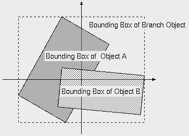

| vfr - Volflex rendering API - |
class vfrGroup
Class Hierarchy
Header files
- #include "vfrGroup.h"
- vfrGroup(const std::string& name VFR_NONAME, const Bool mode = FALSE)
- 空のvfrGroupオブジェクトをインスタンスする。
- name オブジェクト名
- mode 自己破壊モード
- virtual ~vfrGroup()
- vfrGroupオブジェクトを破壊する。
public methods / variables
- Bool addChild(vfrNode* c)
- 子供のオブジェクトを追加し、結果を返す(有効: TRUE)。
- c 追加する子供オブジェクト
- Bool remChild(vfrNode*c)
- 指定されたオブジェクトを子供のオブジェクトリストから削除する。
子供のオブジェクトリストに削除指定オブジェクトが見つかればリストから削除し、TRUEを返す。
- c 削除指定オブジェクト
- vfrNode* getChild(const int order)
- 指定されたリスト番号の子供オブジェクトへのポインタを返す。
リスト番号は、子供オブジェクトリストの登録番号であり、オブジェクトIDとは異る。
指定されたリスト番号が無効の場合、NULLを返す。
- order リスト番号
- int getNumChildren() const
- 子供オブジェクトの数を返す。
- vfrNode* getObj(const unsigned int id)
- オブジェクトIDで自分自身を含む配下のオブジェクトを検索する。
- id 検索対象のオブジェクト名
- vfrNode* getObj(const char* name)
- オブジェクト名で、自分自身を含む配下のオブジェクトを検索する。
- name 検索対象のオブジェクト名
- Bool accumMatrix(const unsigned int id, vfrMatrix &m) const
- 自分自身を含む配下のオブジェクトの累積幾何変換行列を計算する
- id 対象オブジェクトのオブジェクトID番号
- m 累積幾何変換行列
Description
vfrGroupクラスは、複数の子供のオブジェクトを持つ事ができる
グルーピングオブジェクトのクラスである。
Scene Tree
vfrGroupクラスは複数の子供のオブジェクトを持つ事ができる。
子供のオブジェクトには更にvfrGroupオブジェクトを設定する事ができ、
シーンツリー(Fig.1)を構成する。

Fig.1 Scene Tree
vfrGroupオブジェクトは、vfrNodeと同様にローカル座標系の定義を行うが、
vfrGroupオブジェクトに幾何変換が施されると、全ての子供のオブジェクトがその影響を受ける。
以下のような親子関係のシーンツリーを例にとる。
- Scene0
- →Branch1
- →Branch2
- →Object3
Scene0, Branch1, Branch2, Object3の
幾何変換行列をそれぞれ[M0],[M1],[M2],[M3]と
する場合、レンダリング時にはObject3の頂点座標(v0)に対して以下のような幾何変換が施される。
v = [M0][M1][M2][M3]v0
シーンツリーは、マテリアルの参照にも
影響を与える(マテリアルスタック参照)。
Bounding Box
vfrGroupオブジェクトのバウンディングボックスは、子供のオブジェクトの
バウンディングボックスをもとに計算される。
バウンディングボックスは、vfrGroupオブジェクトのローカル座標系における各軸方向に
子供のオブジェクトのバウンディングボックスの存在範囲を計算し、
バウンディングボックスのサイズを決定する(Fig.2)。

Fig.2 Bounding Box of vfrGroup
Selection
vfrGroupオブジェクトを含むシーンツリーに対してセレクションテストが行われた時、
vfrGroupオブジェクトがセレクションテストに合格するかどうかは子供のオブジェクトの
ピッキングモードによって異る。
ピックされた子供のオブジェクトのピッキングモードがTRUEである場合、
vfrGroupオブジェクトはセレクションテストには合格しない。
ピックされた子供のオブジェクトのピッキングモードがFALSEである場合、
vfrGroupオブジェクトはセレクションテストに合格し、セレクションバッファには
vfrGroupオブジェクトのIDが格納される。
Feedback
vfrGroupオブジェクトはフィードバックテストに対し、常に不合格となる。